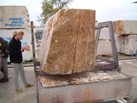
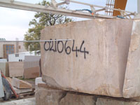
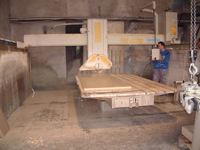
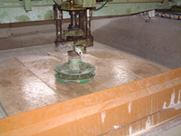
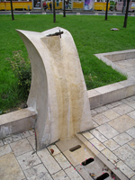

|
Bánya neve: Süttõ 1 - édesvízi mészkõ |
|
Leírás
A süttõi kõbányák haszonkõzete az édesvízi mészkõ.
A süttõi édesvízi mészkõ földtanilag a legfiatalabb képzõdmények közé tartozik, kora mindössze 800-900 000 év között van. A pleisztocén jégkorszak idején édesvizû tóban keletkezett a mészkõ. A tófenék forrásai sok oldott kalcium karbonátot hoztak felszínre. A viszonylag nagy nyomásnál feltörõ langyos vizek az alacsony nyomású környezetbe kerülve elvesztették CO2 tartalmuk jelentõs részét így felbomlott a kalcium-hidrokarbonát egyensúlya és kivált a kalcium karbonát. A süttõi mészkõ az évszakok változásáról is információt ad. Nyáron lényegesen kevesebb lösz került a tóba, így a kõzet színe világos elefántcsont színû. Télen a behordott homogén anyag jóval több, ami a keletkezõ mészkövet világosbarnára színezi. A kõzet így válik kétszínûvé és veszik fel a rétegek a moduláló vagy traverzáló formát. Ez a látvány csak akkor jön létre, ha a rétegzõdésre merõlegesen vágják el a kõzetet, ezt nevezzük "travertinre" vágásnak, ha azzal párhuzamosan, akkor az egymással keveredõ színek felhõs rajzolatot eredményeznek. Ilyenkor egyszerûen csak mészkõrõl beszélünk.
A süttõi édesvízi mészkõ nagy szilárdságú, fagyálló és idõtálló kõzet, jól faragható, csiszolható és fényezhetõ. Széles körben használható kertépítészeti, építészti és belsõépítészeti célokra.
Üzemeltetõ: Reneszánsz Kõfaragó Zrt.
Képek
 Süttõi kõbánya |
 Süttõi kõbánya |
 Süttõi kõbánya |
 Lapravágás gatterrel |
 Lapravágott mészkõ |
 darabolás sodronnyal |
 Darabolás koronggal |
{kind=link}
{kind=link}
|  Darabolás koronggal |
 Felületi megunkálás |
 Kõ váza esztergálása |
 Országház cserére váró homlokzatdíszei |
 Homlokzatdísz faragás közben |
 Travertin kiskockakõ |
 Szent István tér díszburkolata |
{kind=link}
{kind=link}
|  Ivókút a Szent Gellért téren |
 Homlokzat burkolat, Budaörs, Városháza |
 Bordázott, mart felület |
{kind=link}
Linkek
link1
link2
link3